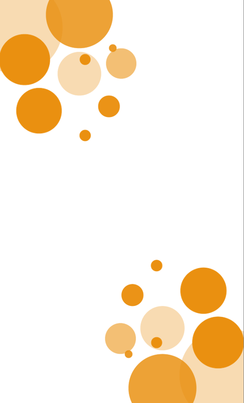

<ion-content [fullscreen]="true" class="content">

  
  
  <ion-grid [fixed]="true" class="cuadros">
    <ion-row>
      <ion-col>

        <div id="fondox" (click)="irImagenes()">
          <ion-tab-button class="custom-tab-button">
            <ion-icon name="images-outline"></ion-icon>
            Imagenes
          </ion-tab-button>
        </div>

      </ion-col>
      <ion-col >

        <div id="fondox" (click)="irListMusic()">
          <ion-tab-button tab="radio" class="custom-tab-button">
            <ion-icon name="musical-notes-outline"></ion-icon>
            Multimedia
          </ion-tab-button>
        </div>

      </ion-col>
    </ion-row>

    <ion-row>
      <ion-col>

        <div id="fondox" (click)="irRegistro()">
          <ion-tab-button tab="radio" class="custom-tab-button">
            <ion-icon name="clipboard-outline"></ion-icon>
            Registro
          </ion-tab-button>
        </div>

      </ion-col>
      <ion-col>

        <div id="fondox" (click)="irPokemones()">
          <ion-tab-button tab="radio"  class="custom-tab-button">
            <ion-icon name="apps-outline"></ion-icon>
            Pokedex
          </ion-tab-button>
        </div>

      </ion-col>
    </ion-row>
  </ion-grid>

</ion-content>

<ion-footer>
  <div id="footer">
    <ion-toolbar color="warning">
      <div class="ion-text-center">
        <ion-icon name="log-out-outline" (click)="salir()" id="camera"></ion-icon><br>
      </div>
    </ion-toolbar>
  </div>
</ion-footer>